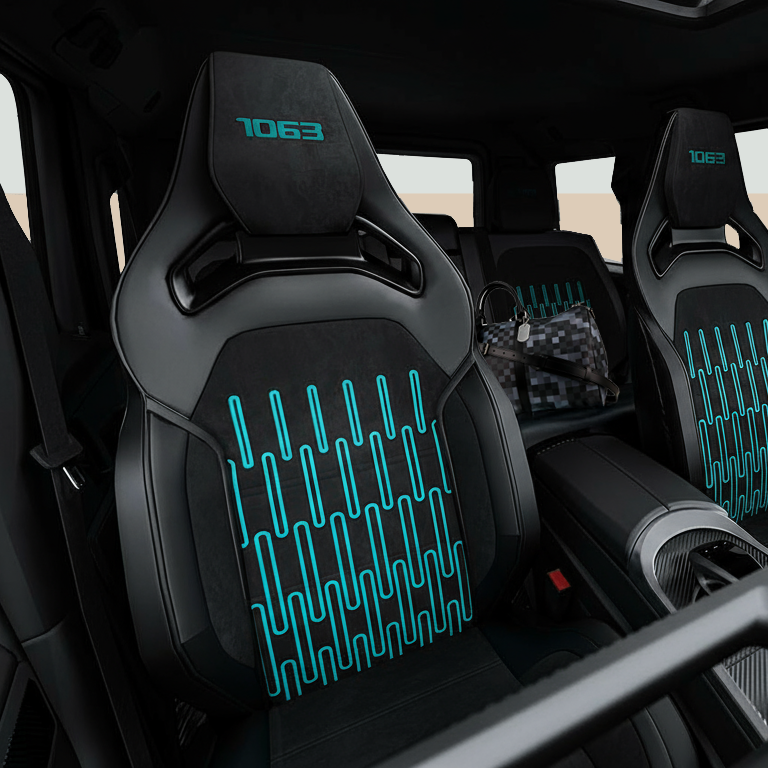

Spring Summer 2026
Prelude.
Before the bloom. Four compositions curated around the moment before opening.
Spring Summer 2026
Before the bloom. Four compositions curated around the moment before opening.
Prelude is not a color. Not a material. It is a time signature — the beat before the first note. Light returns. Colors soften. Structure gives way to movement.
For Spring Summer 2026, HOF composed this moment into four automotive compositions. Each one different. Each one drawn from the same stillness — the state before bloom.

HOF G · V — Prelude · Collector Model · SS26

The season's defining composition. Parisian couture sensibility meets botanical precision. A tonal range between champagne and indigo, brought to life through satin finishes, botanical textile inserts, and hand-placed embroidery.
Prelude names both the season and its defining work — a reference to early botanical illustration, where precision of line met patience of observation.
Explore Prelude


Exterior — Satin finish, two-tone composition.
Interior — Botanical textile inserts, warm leather.
Detail — Every stitch placed by hand, Sindelfingen.
A HOF is not observed from the outside. It is entered. Inhabited. The composition surrounds — material, proportion, light, silence. It becomes atmosphere. Not the kind that announces. The kind you notice once you're inside.
"True elegance appears at the moment something opens, not when it insists."
HOF Creative Direction
Three expressions, each drawn from the same seasonal impulse. Different palettes, different temperaments. The same level of atelier attention.
Dark. Architectural. A composition built on contrasts — structured surfaces against quiet interior atmospheres. Cadence carries the rhythm of the collection's more reserved side.
Explore Cadence

Amber light. Dual expressions. A composition that reads differently depending on who inhabits it — one interior warm and organic, the other dark and precise. Genese captures the idea of origin: a single thought, two possible readings.
Explore GeneseOrganic. Textural. A composition that blurs the line between Bauhaus geometry and natural form. Currently in atelier development — the visual language taking shape through material experiments and color studies.
Explore Vernal


The Principle
Seasonal rhythm. Cultural intention. The hand over the machine. Haute couture's principles — applied to the automobile.
The Maison
Long table. Material samples. A designer who listens before drawing. Every HOF begins with a conversation.
Book an Appointment